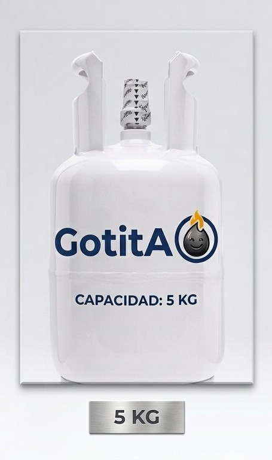
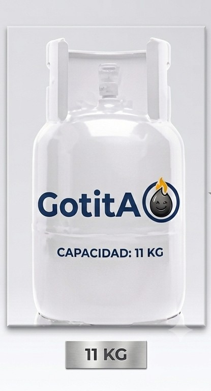
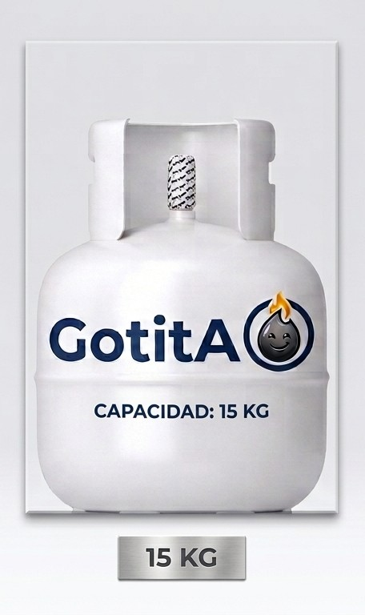
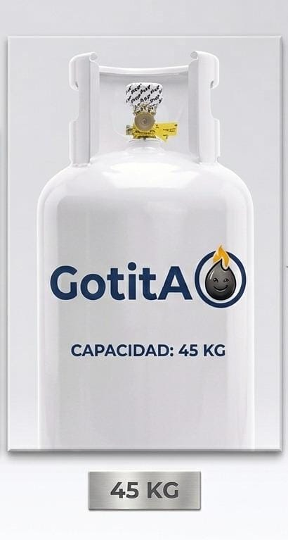

Quienes somos?.
Distribuidora de Gotita es una empresa familiar fundada en el año 1998 en la comuna de Chillán, Región de Ñuble. Desde hace más de dos décadas, nos dedicamos con orgullo y compromiso a la distribución de gas licuado a domicilio, llevando energía limpia y un servicio cálido directamente a las cocinas, estufas y negocios de nuestros vecinos.
Nuestros cilindros.

Cilindro 5 KG.Excelente para camping, laboratorios, estufas portátiles o consumos individuales ligeros

Cilindro 11 KG.El formato preferido por las familias de Chillán para la cocina del día a día y el agua caliente

Cilindro 15 KG.Ideal para sistemas de calefacción, hogares de alto consumo o locales comerciales de comida

Cilindro 45 KG.Ideal para un reabastecimiento menos frecuente
Otros. Contamos con una variedad de accesorios como : Accesorios, Mangueras, Reguladores. Ideales para renovar tu sistema de Gas
Como pedir nuestro Gas?
1. Crea tu cuenta o Inicia Sesión
Para proteger la privacidad de tus datos de despacho , el primer paso es !!registrarse como cliente!! o ingresar con tus credenciales seguras . Solo te tomará un minuto completar el formulario básico.
2. Configura tu pedido en segundos
Una vez dentro del sistema, simplemente ingresa tu dirección de entrega y !!selecciona el formato de cilindro!! que necesitas (disponibles en formatos de 5 kg, 11 kg, 15 kg y 45 kg). Confirma tu solicitud con un solo clic.
3. Sigue tu despacho en tiempo real
¡Ya no tendrás que esperar todo el día sin saber cuándo llegará el camión! [1] A través de nuestro !!mapa interactivo integrado!!, podrás ver la ubicación exacta del repartidor en ruta y verificar el estado de tu entrega en tiempo real .